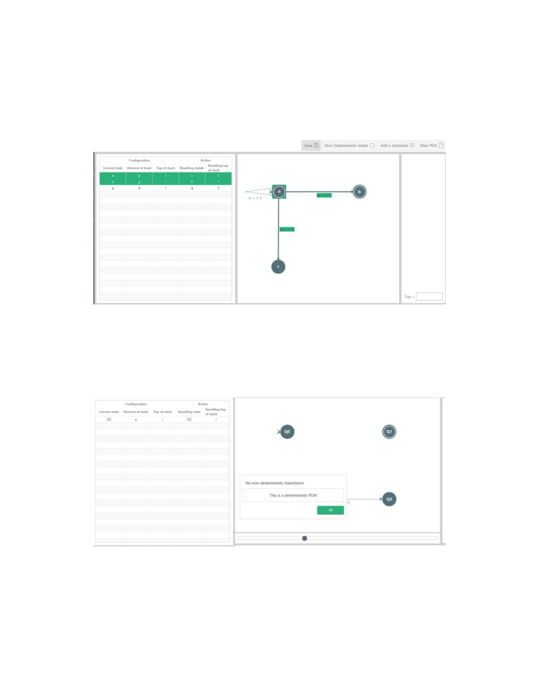
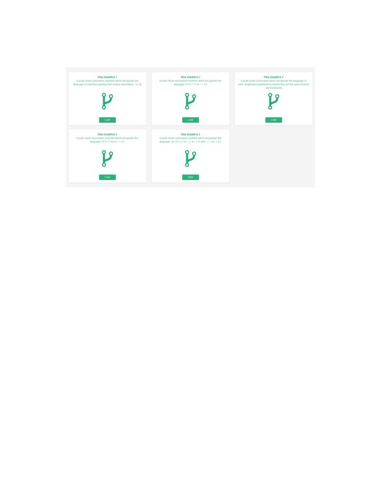
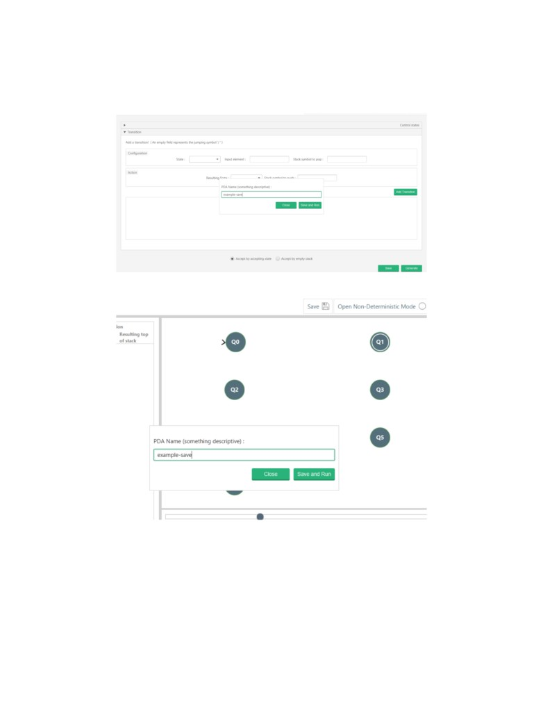
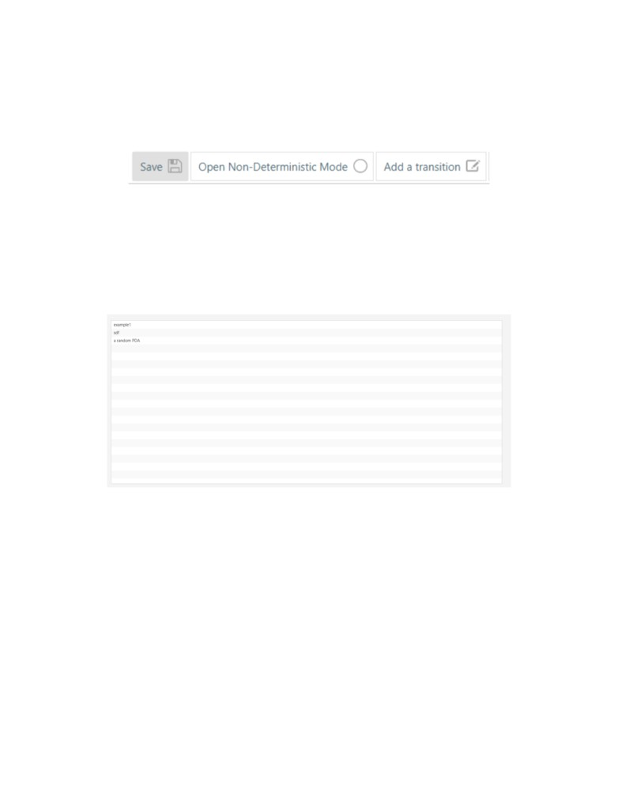
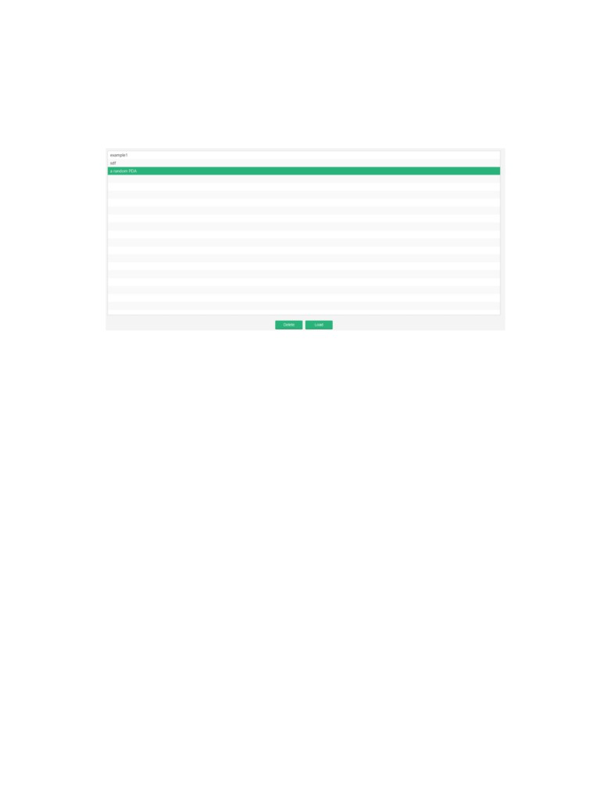

B.3
Misc Features
B.3.1
Non-Deterministic Mode
The user can view all non-deterministic transitions by accessing the non-deterministic mode
via the toolbar after the PDA has been loaded.
The highlighted transitions are the non-deterministic transitions.
If the PDA has no non-deterministic transitions, then a dialogue box will instead be shown to
the user.
89

B.3.2
Examples
The examples section can be accessed either on the home page or via the side-bar.
The PDA examples are available to load into the application. Each comes with a formal
description of the language it recognizes.
Once an example PDA has been loaded, it can be simulated with. Note: To save modifications
to examples, a new copy of the example instance must be made via the save feature.
90

B.3.3
Saving and Loading
The user can either save their custom definition on the quick definition page directly or after
the PDA has been loaded on the PDA runner page.
This name is what identifies the PDA machine in the user’s library when being loaded back,
so it must be a unique name for it to be distinguishable. A unique name is a prerequisite for a
successful save.
91

All changes made to the saved PDA will render the current version in memory out of date.
When a saved PDA changes in state, the save button in the toolbar becomes highlighted. This
is an indicator to the user to save the changes to memory.
When the user wants to load a previously saved PDA, they can easily do that by accessing it
in their library. A user library can be accessed from the side-bar or the home page.
The library gives a list of saved PDA instances.
92

The user can load and delete any PDA machine from their library by clicking on their desired
machine.
This will open an action bar below the list view.
The PDA can easily be loaded by the user.
93